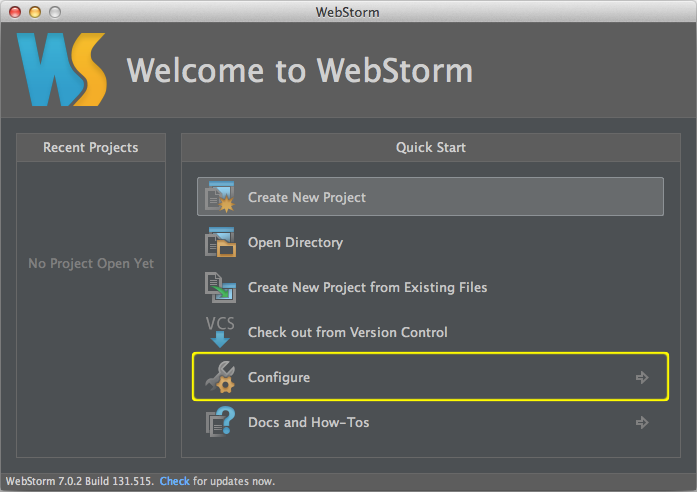
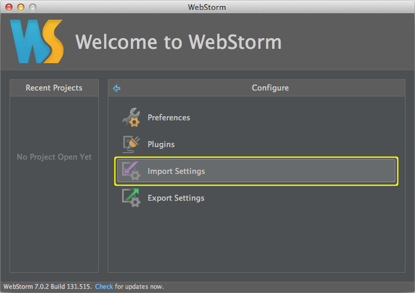
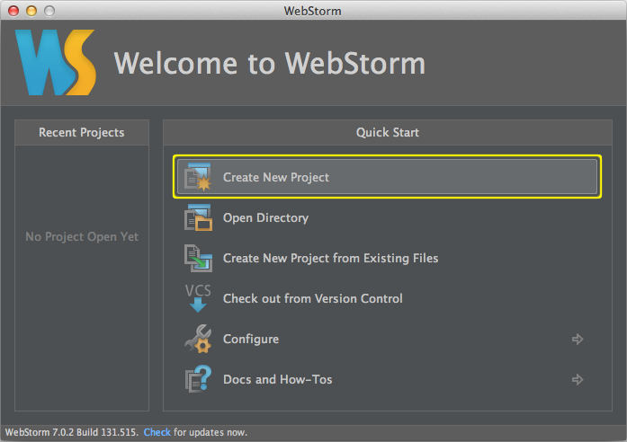
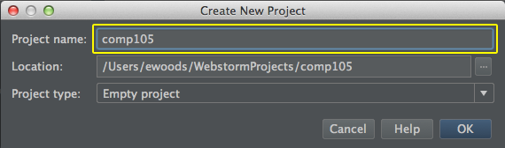
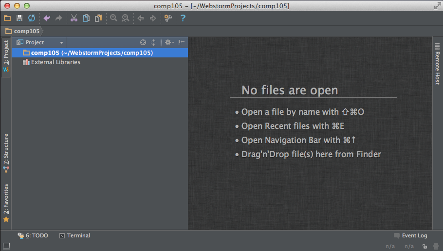
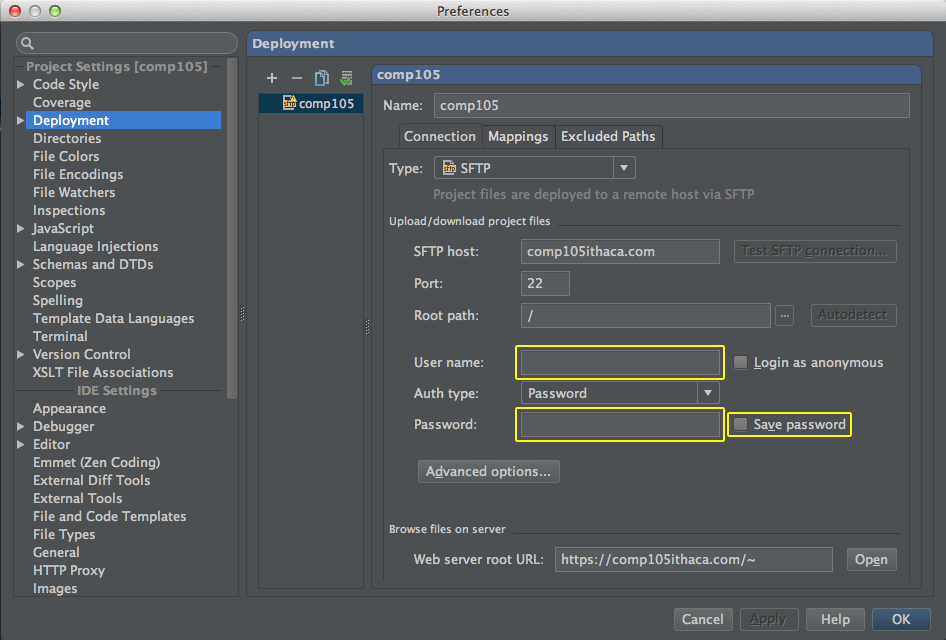
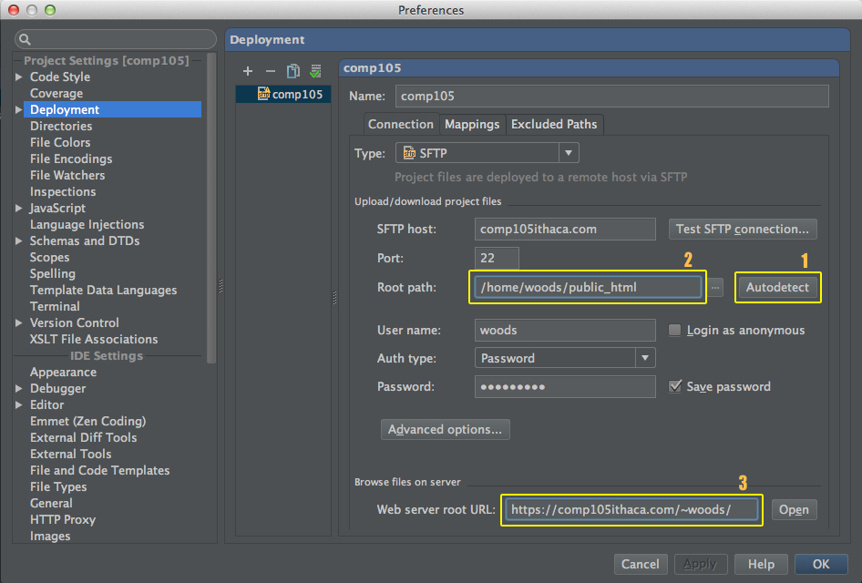
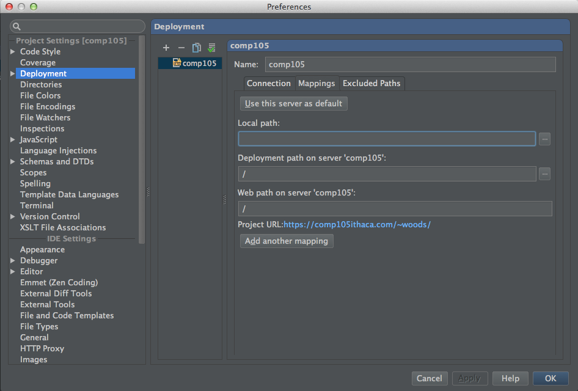
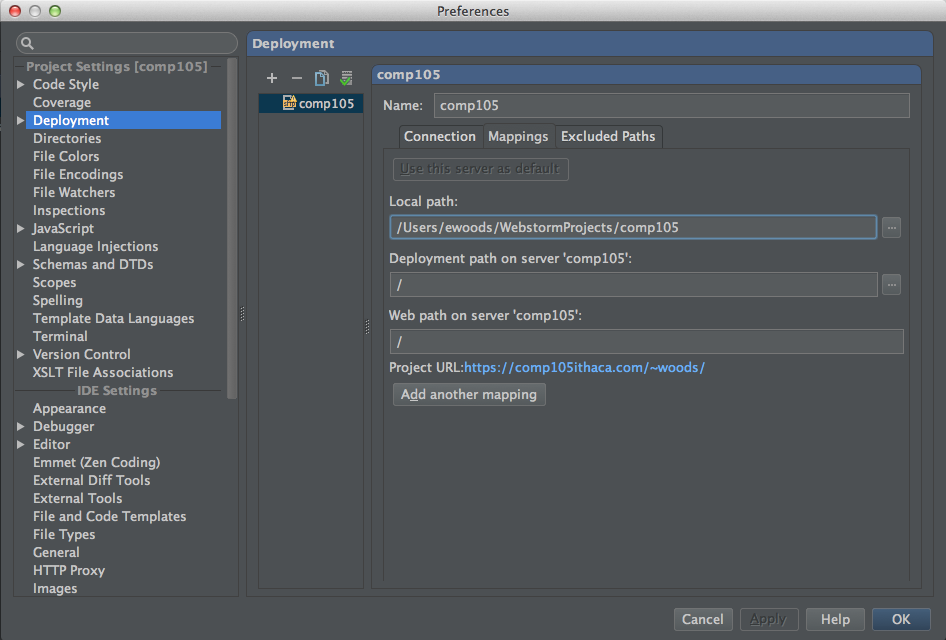

WebStorm Project Setup
These instructions will assist you in configuring WebStorm for use in Comp105. We have a classroom license for the software and have created a simplified configuration specifically for Comp105.
Download Resources
- Download WebStorm
- Get WebStorm 7
- Download Comp105 WebStorm Settings
- webstorm_settings.jar
- disabled_plugins.txt
Install WebStorm and Register
- Run the Installation Wizard and follow the instructions
- Run WebStorm
- When prompted, enter this User Name and License Key into the registration dialog:
User Name:
Ithaca College
License Key:
===== LICENSE BEGIN =====
491513-25112013
00001ZePTsKtnjzD02o3ZdZtymHkfb
xikuVPebWgm"X"dRbrgoDUW"wuXO1M
BICqjhpO5uLA9LfC4ohT8ebRkLnhQn
===== LICENSE END =====
Import Settings
- Run WebStorm
- From the intro screen choose "Configure" and then "Import Settings" (note, if you don't see the intro screen like in the images below, but you do see a project screen, choose "Close Project" from the "File" menu):


- Select the webstorm_settings.jar file for importing and allow WebStorm to restart
Create a Project for Comp105
- From the intro screen choose "Create New Project":

- Enter "Comp105" as the project name and use the default project location:

- You should see a project screen similar to this:

Old Change Your Password Notes (Mac only)
Configure Deployment Server
- Go to the "Preferences..." menu item (under WebStorm menu on Mac, "Settings" under File menu on Windows)
- Select "Deployment" and you will see the comp105 server listed
Set up the Connection
- Enter your username and password. If you are on a public computer, don't select "Save Password".

- Click the "Autodetect" button, which should put your site directory into the "Root path" field.
- Add "/public_html" after your site directory.
- Add your username at the end of the "Web server root
URL".

Set up the Mappings
- Select the "Mappings" tab

- Click "Use this server as default"
- Select your project directory as the "Local path". (Clicking on the "..." button to the right of the Local Path field should get you the right folder.)
- Put "/" as the "Deployment path on server..." and "Web path on server..."

Confirm Server Configuration
- Go to the menu item Tools Deployment Browse Remote Host
- You should see a panel on the right open up and indicate that it is connecting to the server.
- If your public_html directory shows up in that panel, you are done.
- If there are problems, WebStorm will indicate the nature of the problem and you should read the instructions it provides on how to correct the issue.